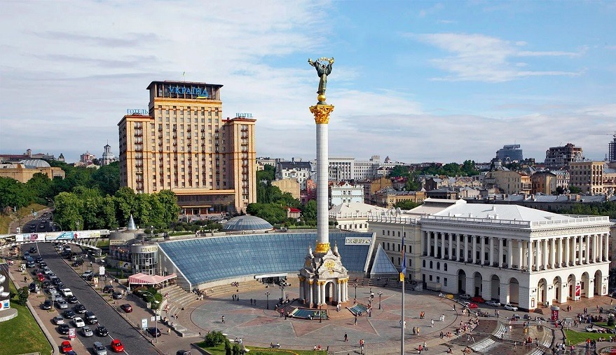

Місце народження: 22 грудня, 2002 року, с. Ковтуни (Черкаська обл.)
Освіта: Ковтунівський НВК, с. Ковтуни; НТУУ "КПІ", м. Київ
Хоббі:
Улюблені фільми:
Київ — столиця та найбільше місто України, одне з найбільших і найстаріших міст Європи. Розташований у середній течії Дніпра, у північній Наддніпрянщині. Політичний, соціально-економічний, транспортний, освітньо-науковий, історичний, культурний та духовний центр України. У системі адміністративно-територіального устрою України Київ має спеціальний статус, визначений Конституцією, і не входить до складу жодної області, хоча і є адміністративним центром Київської області. Місце розташування центральних органів влади України, іноземних місій, штаб-квартир більшості підприємств і громадських об'єднань, що працюють в Україні.
